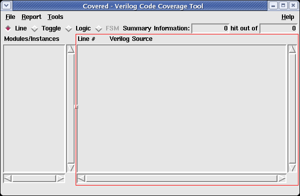

Figure 1 shows the area of the main window where the coverage file viewer window is located.
Figure 1. Covered Main Window Highlighting the Coverage File Viewer
The coverage file viewer shows the currently selected module (indicated in the information bar) Verilog source. The coverage file viewer provides a read-only view of the original source code so all editing of the file must be done in a separate editor. Each source code line in the viewer window is numbered to the left of the line to aid in debugging and finding the lines in an editor.
Depending on the coverage metric currently selected in the coverage metric bar and the covered/uncovered/race condition selections in the report menu, the lines that are found to be uncovered, covered, and/or considered a race condition are highlighted in their respective color schemes in the coverage file viewer window. Using the scrollbars to the right and below the coverage file viewer, the user can find the missed/hit lines quickly for further analysis.
The coverage file viewer is the place where the user can invoke the toggle and combinational logic detail windows. To view one of these windows, do the following:
Additionally, the logical blocks that have been disregarded by Covered due to a potential race condition existing are highlighted. By placing the cursor over one of these logical blocks, the reason for why the logical block was disregarded is output in the information bar.
To view a new module/instance, simply left click on one in the Module/Instance Listbox. The source code for the selected module/instance will be immediately loaded into the coverage file viewer in the currently selected coverage metric.
To view a new coverage metric, simply left click on one of the coverage metrics in the Coverage Type Bar. The currently selected module/instance will be immediately updated in the coverage file viewer, highlighting the uncovered/covered code for the current metric.